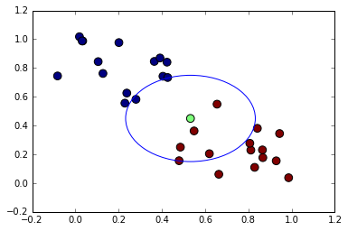
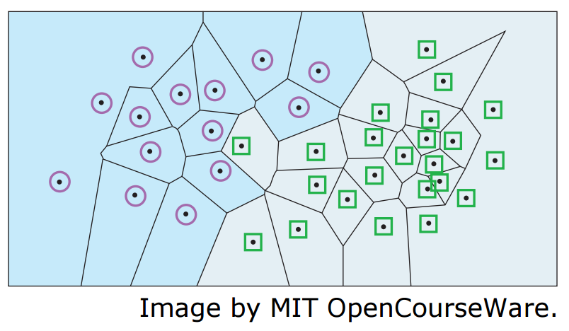
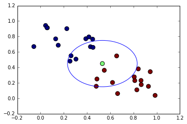
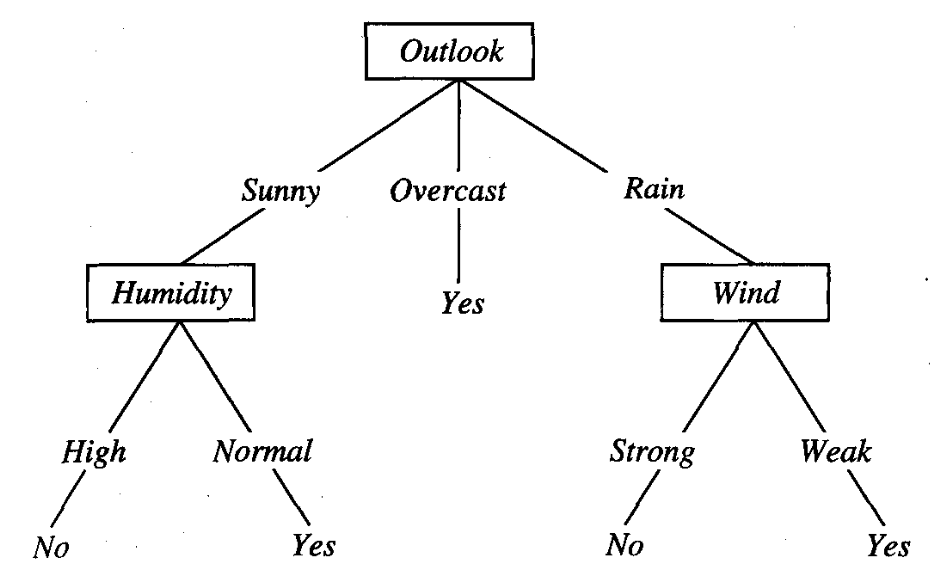
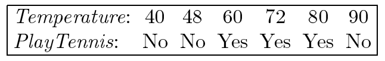
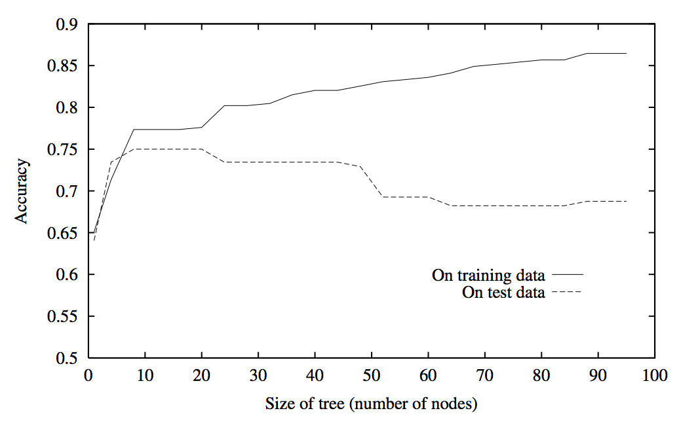

Introduction to Machine Learning and Data Mining
Kyle I S Harrington / kyle@eecs.tufts.edu
Some slides adapted from Tom Mitchell and Ryan Adams
Weka
A powerful ML package with long-history
Implements many of the algorithms we will study
Using Weka early on helps get an idea of what ML can do
Course Logistics
We'll be sticking to the Mitchell textbook for the most part
My office hours: by appointment, generally Thursday is best
k-Nearest Neighbors
Given a dataset $D$ with $N$ observations and $p$ dimensions
Every point $i$ is expressed as:
$x^i = ( x^i_1, x^i_2, ..., x^i_p )$
(Euclidean) distance between 2 points $i$ and $j$:
$d(x^i,x^j) = ( \displaystyle \sum^p_{m=1} ( x^i_m - x^j_m )^2 )^{1/2}$
k-Nearest Neighbors
For some unseen observation $\hat{x}$
$k=5$
Decision Boundaries kNN
Decision boundaries are defined over the Voronoi diagram
Image by Cynthia Rudink-Nearest Neighbors
For some unseen observation $\hat{x}$
$k=9$
Do we want the majority in this case?
Distance-weighted kNN
| idx | X | Y | $d(\hat{x},x_i)$ | Blue? |
| 1 | 0.549097186162 | 0.362677386832 | 0.0884316415625 | False |
| 2 | 0.655390965303 | 0.548725980881 | 0.158017656472 | False |
| 3 | 0.485782640555 | 0.249828988661 | 0.205057654261 | False |
| 4 | 0.451911896627 | 0.658980037822 | 0.224393254589 | True |
| 5 | 0.305219682514 | 0.507370621777 | 0.234428626804 | True |
| 6 | 0.429995633684 | 0.667751973208 | 0.241064874734 | True |
| 7 | 0.619841102463 | 0.204366698701 | 0.260279623299 | False |
| 8 | 0.254019391038 | 0.480744029655 | 0.28012416478 | True |
| 9 | 0.262776335089 | 0.55080811249 | 0.288019748099 | True |
Blue distances: 1.26803066901
Red distances: 0.711786575594
kNN in Practice
Housing prices
Attributes of houses:
- location
- bedrooms, bathrooms
- square footage
What if we used the hexidecimal color of the house?
Regression with kNN
For some house that hasn't gone on the market $\hat{x}$
| Index | X | Y | $d(\hat{x},x_i)$ | House value |
| 1 | 0.549097186162 | 0.362677386832 | 0.0884316415625 | $67,807.65 |
| 2 | 0.655390965303 | 0.548725980881 | 0.158017656472 | $165,240.34 |
| 3 | 0.485782640555 | 0.249828988661 | 0.205057654261 | $83,034.13 |
| 4 | 0.451911896627 | 0.658980037822 | 0.224393254589 | $275,335.16 |
| 5 | 0.305219682514 | 0.507370621777 | 0.234428626804 | $334,449.68 |
Estimated value of house $\hat{x}$:$185,173.39
An Ode to ID3
An ID3
Decision tree
Is built greedily
So either stop soon*
Or eventually prune
Otherwise you're probably overfitting
*where soon is statistically significant
Decision Trees
Handling Continuous Values
Make it discrete!
$(Temperature > \frac{( 48 + 60 )}{2} )$
Consider each boundary (i.e. $\frac{a+b}{2}$)
Use information gain to choose node as usual
Handling Missing Values
Some observations may not have values for all attributes
That's OK, we'll use it anyway
Multiple options:
- When we get to the relevant node, $N$, assign the most common value of $A$ at $N$
- Assign most common value of $A$ at $N$ that maps to class $C$
- Use probabilities based on distribution of $A$ at $N$
Overfitting
Reduced-error pruning
- Build a tree as usual, potentially overfitting
- Use a validation dataset
- Greedily remove nodes that improve the accuracy on the validation data
Rule Post-Pruning
$(Outlook=Sunny \wedge Humidity=High) \implies No$
Rule Post-Pruning
Grow tree, allowing it to overfit
Convert a tree to a collection of rules
Remove each precondition that improves accuracy (on validation set)
Sort rules by estimated accuracy, and maintain sorted order for classification
Rules from Tree
$(Outlook=Sunny \wedge Humidity=High) \implies No$
$(Outlook=Sunny \wedge Humidity=Low) \implies Play$
$(Outlook=Overcast) \implies Play$
$(Outlook=Rain \wedge Wind=Weak) \implies Play$
$(Outlook=Rain \wedge Wind=Strong) \implies No$
Pruning Preconditions
$(Outlook=Rain \wedge Wind=Weak) \implies Play$
$(Outlook=Rain \wedge Wind=Strong) \implies No$
| Outlook | Temp | Humidity | Windy | Play |
| Rainy | Low | High | Weak | No |
| Rainy | High | High | Strong | No |
Pruning Preconditions
$(Outlook=Rain \wedge Wind=Weak) \implies Play$
$(Outlook=Rain \wedge Wind \neq Strong) \implies No$
| Outlook | Temp | Humidity | Windy | Play |
| Rainy | Low | High | Weak | No |
| Rainy | High | High | Strong | No |
Pruning Preconditions
$(Outlook=Rain \wedge Wind=Weak) \implies Play$
$(Outlook=Rain) \implies No$
| Outlook | Temp | Humidity | Windy | Play |
| Rainy | Low | High | Weak | No |
| Rainy | High | High | Strong | No |
Sorting Rules by Accuracy
$(Outlook=Rain) \implies No$
$(Outlook=Rain \wedge Wind=Weak) \implies Play$
| Outlook | Temp | Humidity | Windy | Play |
| Rainy | Low | High | Weak | No |
| Rainy | High | High | Strong | No |
Sorted rules
$(Outlook=Sunny \wedge Humidity=High) \implies No$
$(Outlook=Sunny \wedge Humidity=Low) \implies Play$
$(Outlook=Overcast) \implies Play$
$(Outlook=Rain) \implies No$
$(Outlook=Rain \wedge Wind=Weak) \implies Play$
| Outlook | Temp | Humidity | Windy | Play |
| Rainy | Low | High | Weak | No |
| Rainy | High | High | Strong | No |
Classification with rules
$(Outlook=Sunny \wedge Humidity=High) \implies No$
$(Outlook=Sunny \wedge Humidity=Low) \implies Play$
$(Outlook=Overcast) \implies Play$
$(Outlook=Rain) \implies No$
$(Outlook=Rain \wedge Wind=Weak) \implies Play$
| Outlook | Temp | Humidity | Windy | Play |
| Sunny | Low | Low | Weak | ? |
| Rainy | High | High | Weak | ? |
Advantages of Rule Pruning
Why might one like rule pruning over reduced-error pruning?
Advantages of Rule Pruning
- More specific than removing entire subtrees
- Can remove distinctions near the root
Used in C4.5 (J48)
Growing a tree with chi-squared
Before making a split, test if the split is statistically significant
Proposing a split
Given training dataset $D$
Propose a split on attribute $A$
Notation:
- $N_c$ is number of instances with class $c$
- $D_x$ is data with value $x$ for attribute $A$
- $N_x$ is the number of instances in $D_x$
- $N_{xc}$ is the number of instances in $D_x$ with class $c$
Null Hypothesis
Null hypothesis: $A$ is irrelevant
The total proportion of class $c$ in $D$ is $N_c/N$
If the null hypothesis is true, then on average:
$\hat{N}_{xc} = \frac{N_c}{N} |D_x|$
Deviation from Null
Even if null hypothesis is true,
it will rarely be exactly $=$ to average
Measure deviation as:
$Dev=\displaystyle \sum_x \displaystyle \sum_c \frac{ ( N_{xc} - \hat{N}_{xc} )^2 } {\hat{N}_{xc}}$
Deviation from Null
Measure deviation as:
$Dev=\displaystyle \sum_x \displaystyle \sum_c \frac{ ( N_{xc} - \hat{N}_{xc} )^2 } {\hat{N}_{xc}}$
How far is our observed proportion from the expected proportion (based on the distribution within the dataset)
Using the Deviation
Deviation is the chi-squared statistic
The larger the deviation, the further we are from the null hypothesis that an attribute is irrelevant
If $Dev$ is small, then we don't want the branch
Using the Deviation
Put $Dev$ into a chi-square table
How many degrees-of-freedom?
$DF = ( ( number of attribute-values ) - 1 ) ( number of classes - 1 )$
 *
*
*Wikipedia, By Geek3 - Own work, CC BY 3.0, $3
Using the Deviation
Chi-square table will give a probability
A large Dev leads to a small probability $\implies$ the pattern is rare relative to the null hypothesis
Split if $probability < \alpha$
What should $\alpha$ be? 0.05 is a default
Reflecting on chi-squared
Doesn't require separate validation data
Statistical tests become less valid with less data
$\alpha$ is a parameter
Assignment 2 is not required, just bonus
Posted in the assignments section
Due: Feb 03
What do you get? +10% on the first quiz
Final Projects
Proposal due: March 7
Study a novel dataset with an advanced algorithm
Extend a ML algorithm
Do a comparative study of multiple algorithms
Final Projects
Due: April 25
Turn in a write-up (8-12 pages)
- Background on problem
- Related work
- Your method
- Results
- Conclusion and future work
- References
Should have at least 10 references
If multiple people, then more work is expected
What Next?
Naive Bayes (you may want to skim some of the probability tutorials)